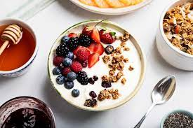

Yogurt recipe
Yogurt recipe

Description
Yogurt is a simple breakfast dish that is light on the stomach and a treat for your taste buds. It is served cold with additions like fruits (such as bananas, strawberries, etc.), granola, honey or seeds. Yogurt can be a healthy breakfast or starter dish.
Ingredients
- plain yogurt
- 4 strawberries
- 10 blueberries
- 1/4 cup of granola
Steps
- serve 2 cups of yogurt on a bowl
- grab 1/4 cup of granola and pour on top
- rinse and slice strawberries and place in yogurt bowl
- rinse blueberries and pklace in bowl
- stir till ingredients are evenly mixed and enjoy!